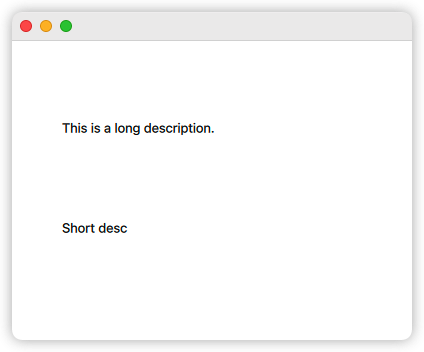
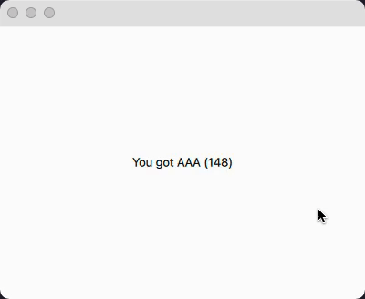
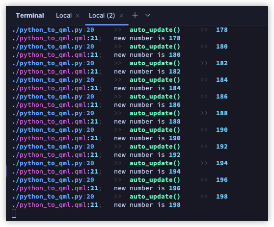

Python 与 QML 的互操作¶
这是 qmlease 的重点功能. 通常来说, 我们习惯在 python 端完成比较复杂的逻辑操作, 而 qml 端专注 ui 相关的操作.
在 Python 端操作 QML 对象¶
大致可分为如下步骤:
- 在 python 端创建一个类继承
QObject - 编写一个槽函数, 接收来自 qml 的
QObject对象. - 对收到的对象进行操作 (主要用到
QObject.property和QObject.setProperty).
# main.py
from qmlease import QObject, app, slot
class Main(QObject):
@slot(object)
def set_text_view(self, text_item: QObject) -> None:
"""
如果 text_item 宽度大于 100px, 则显示 A 文字; 否则显示 B 文字.
"""
if text_item['width'] > 100:
text_item['text'] = 'This is a long description.'
else:
text_item['text'] = 'Short desc'
app.register(Main(), 'main') # 注意第一个参数是类的实例.
app.run('view.qml')
// view.qml
import QtQuick
Window {
visible: true
width: 400
height: 300
Text {
width: 200
x: 50
y: 80
Component.onCompleted: {
py.main.set_text_view(this)
}
}
Text {
width: 80
x: 50
y: 180
Component.onCompleted: {
py.main.set_text_view(this)
}
}
}

在 QML 端访问 Python 对象¶
步骤如下:
- 在 python 端创建一个类继承
QObject - 将它的实例通过
app.register注册到 qml 访问空间 - qml 通过
py.<name>获取到 python 对象 (可访问 "属性", "信号", "槽函数")
# main.py
# 以下展示了信号, 属性, 槽函数的使用.
from time import sleep
from lk_utils import new_thread
from qmlease import AutoProp, QObject, app, signal, slot
class Main(QObject):
aaa = AutoProp('You got AAA (0)')
# 在 python 端, 你可以认为 aaa 是一个字符串, 并完全按照字符串对待它.
# 在 qml 端, 使用 `get_aaa()` `set_aaa(...)` 进行读和写.
# 同时, aaa 还自动生成了 `aaa_changed` 信号 (通过 qmlease 的魔术方法).
bbb = signal(int)
@slot(int, int)
def ccc(self, offset: int, interval: int) -> None:
@new_thread()
def auto_update():
for i in range(offset, offset + 100, interval):
print(i)
self.bbb.emit(i)
self.aaa = f'You got AAA ({i})'
# 当我们变更了 aaa 的值, 它会自动产生
# `aaa_changed.emit('You got AAA ...')` 信号.
sleep(0.5)
auto_update()
app.register(Main(), 'main') # 注意第一个参数是类的实例.
app.run('view.qml')
// view.qml
import QtQuick
Window {
visible: true
width: 400
height: 300
Text {
anchors.centerIn: parent
Component.onCompleted: {
this.text = py.main.get_aaa()
// ~~~~~~~~~
py.main.aaa_changed.connect((new_text) => {
// ~~~~~~~~~~~ ~~~~~~~~
this.text = new_text
})
py.main.bbb.connect((new_number) => {
// ~~~ ~~~~~~~~~~
console.log('new number is ' + new_number)
})
console.log('start')
py.main.ccc(100, 2)
// ~~~~~~ 起始值和间隔值.
}
}
}

